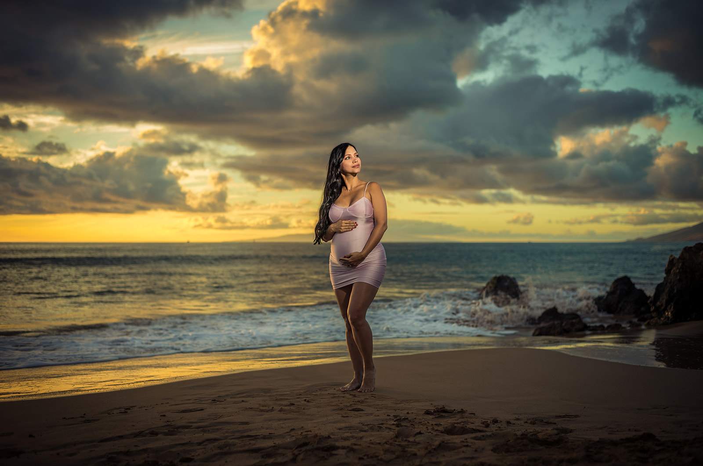
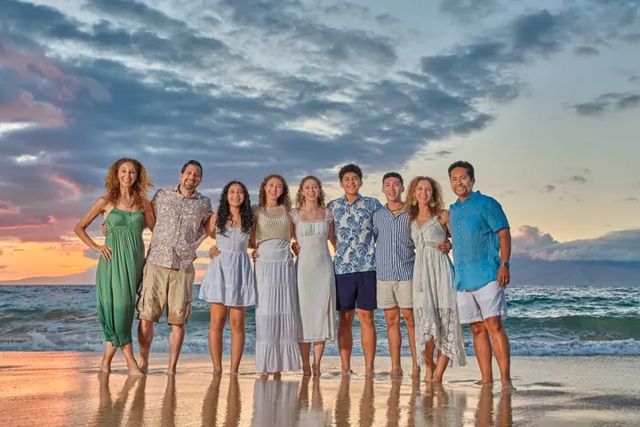

MAUI MATERNITY PHOTOGRAPHERBefore everything changes.
A quiet celebration of who you are now and the family you are becoming.
Held in Maui light.
This season is one of the last pauses before a new life begins. We create an unhurried space to celebrate it—with elegant direction, natural connection and photographs made to become part of your child’s story.
Choose the fresh color of sunrise or the warmth and drama of sunset.
As a Maui maternity photographer, we welcome partners, siblings and multi-generational family across Wailea, Makena and South Maui, timing each session around the light and your comfort.
Schedule Your Session Now

professionally edited photographs included in your maternity archive.
High Resolution · Full Print Rights · Hand Edited
A calm, unhurried maternity session on the beach.
Comfort comes first
We keep maternity sessions gentle: short walks on soft sand, plenty of rest between setups and direction that flatters without asking you to hold awkward poses.
The best light for maternity
The Last Half of Sunset brings warm golden tones and flowing silhouettes, which is why it is our favorite for maternity portraits. Morning sessions are cooler and calmer if you prefer to avoid the afternoon heat.
Where we photograph
Sunset sessions meet at Maluaka Beach in Makena, a quiet crescent of sand with soft evening light. Morning sessions meet at Wailea Beach beside the Four Seasons, which is calm and beautifully lit early in the day.
Partners and siblings
Partners and children are always welcome, and we make time for portraits of you alone, the two of you together and the whole family.
Your photographs
Every image is edited by hand for natural color and brightness, and delivered within 24 to 72 hours as high-resolution files with full print rights. We do not smooth skin or reshape bodies; you will look like yourselves.
Planning a babymoon?
Our Maui Atlas babymoon guide covers resorts, pacing and the best days for photos during a relaxing island trip.
Sessions & live pricing · Maui babymoon guide · What to wear
What expecting parents ask us first.
How much does a Maui maternity photography session cost?
Maternity portraits are not a separate session — choose any Sunrise or Sunset session and simply mention it's for maternity photos when you book.
What is the best trimester for a Maui maternity photoshoot?
Most clients book between 28 and 36 weeks, when the belly is well shaped but travel and standing for a session are still comfortable.
Sunrise or sunset for maternity photos?
Both work beautifully. Sunrise gives fresh, soft color with fewer crowds; sunset gives warmer, more dramatic light.
Can partners and other children be included?
Yes. Many maternity sessions include partners and older siblings as part of the family's growing story.
Do you offer an outfit change during the session?
Many sessions can include time for an outfit change — just mention it when you book so we can plan accordingly.
Where do Maui maternity photo sessions take place?
Sunset maternity sessions are at Maluaka Beach in Makena and morning sessions are at Wailea Beach next to the Four Seasons.
How soon will we receive our maternity photos?
Edited, high-resolution images are delivered within 24 to 72 hours, with full print rights.
One day, you’ll show them.
Choose any sunrise or sunset session below and simply note that it's for your maternity session.
View Sunrise & Sunset Sessions
A Gentle Guide to a Maui Babymoon
Celebrate your growing family against the golden backdrop of Wailea and Makena beaches with our specialized maternity portrait sessions.
Read the guide
What to wear for Maui photos
Field-tested guidance on colors, fabrics, coordination, wind, footwear, and comfortable clothing that photographs beautifully beside Maui’s sand and ocean.
Read the guideBest time of day for a family beach photo in Wailea
Golden hour, sunrise, and why midday sun in Wailea is the one window we don't recommend.
Read the guide